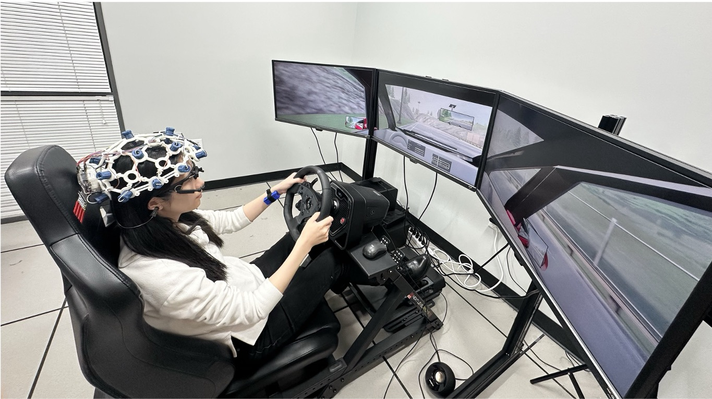

University of Louisville
NSF Collaborative Research Awards #2535920 and #2535921
Cognitive-Emotional State Assessment for Advanced Driving Automation
This collaborative project, led by Yunmei Liu at the University of Louisville with David B. Kaber as the Oregon State University PI, studies how cognitive workload and emotional state can be jointly modeled to support timely, context-aware automation interventions in safety-critical driving operations.
Oregon State University
Two linked NSF awards supporting one project.
Estimated end date: Dec. 31, 2028.
$300,000 per award.
Research Focus
Human-centered automation for advanced driving systems
The project addresses two core limitations in current cognitive workload modeling: unreliable ground-truth labeling and dependence on extensive offline model training. It combines multi-source physiological signals with context-dependent emotional state information to improve real-time human state assessment.
The expected outcome is an integrated cognitive-emotional state assessment framework that connects operator state estimates to appropriate automation responses. The work is positioned around advanced driver assistance systems, with an emphasis on safety, operator trust, and intervention timing.
Objectives
What the project aims to produce
More reliable workload assessment
Develop cognitive workload models that use physiological, performance, and contextual information rather than relying on a single source of ground truth.
Integrated cognitive-emotional modeling
Quantify how cognitive and emotional states interact during challenging driving scenarios and use those relationships to support automation decisions.
Context-aware automation intervention
Identify decision rules and predictive models that determine when and how advanced driving systems should intervene in real time.
Approach
Simulator experiments, multimodal data, and predictive modeling
High-fidelity driving simulator studies
Collect driver performance, central and peripheral physiological signals, cognitive workload responses, emotional state measures, and driver feedback during challenging scenarios.
Statistical analysis of human state dynamics
Model relationships between cognitive workload, emotional state, scenario context, and driver response to establish a quantitative basis for intervention rules.
Deep learning for real-time intervention design
Train nonlinear models on simulator data to predict appropriate intervention timing and intervention form for advanced driver assistance systems.
Testbed
Driving simulation environment for cognitive-emotional state assessment

The project uses a high-fidelity driving simulator testbed to study driver responses during challenging advanced driving scenarios. The setup supports controlled manipulation of traffic and automation conditions while collecting driver performance, physiological signals, cognitive workload responses, emotional state measures, and post-scenario feedback.
Scenario control
Repeatable simulator scenarios support systematic study of workload, emotion, and driver assistance timing.
Multimodal sensing
Physiological and behavioral measures provide a basis for real-time cognitive-emotional state assessment.
Publications
Project-related publications
A Systematic Review of Ground Truth Labeling and Prediction for Cognitive Workload Adaptive Systems
This review synthesizes recent work on machine learning-based cognitive workload monitoring and adaptive systems, emphasizing ground-truth workload labeling, cross-user generalization, and closed-loop adaptive intervention gaps.
Mediation Analysis of Workload and Emotion on the Performance of Supervision Tasks
Using the open-source MOCAS dataset, this paper applies a multilevel, multivariate mediation framework to quantify both direct and statistical mediation pathways from supervision task conditions through workload, arousal, and valence to task success. Valence showed the most consistent mediator-specific role, while direct task effects remained after accounting for operator states.
Project importance: This publication provides a methodological foundation for the project by showing how task configuration, workload, and emotion can be modeled jointly to separate pathways to performance. The framework will inform the project's driving-simulator analyses and the design of state-aware automation interventions.
Data
Dataset release information
Status
Data collection has not started yet
Project datasets, documentation, and access instructions will be posted here after data collection and curation are complete. Stay tuned for future updates.
Broader Impact
Safety-critical systems, education, and dissemination
The research is designed to generate fundamental insight into the dynamic interplay between cognitive and emotional states in safety-critical tasks. The project will also train graduate students in human factors engineering and intelligent systems design, and will disseminate findings through peer-reviewed publications, conference presentations, and outreach to research and industry communities.
Contact
Project PIs
Yunmei Liu
Lead PI, University of Louisville
yunmei.liu@louisville.edu
David B. Kaber
OSU PI, Oregon State University
kaberd@oregonstate.edu
Acknowledgment
This material is based upon work supported by the U.S. National Science Foundation under Awards #2535920 and #2535921.